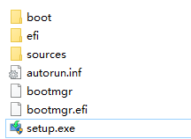

Windows 重装入门
从 0 开始的 Windows 重装指南。
一劳永逸的解决所有人的重装提问.
这里以 Windows 8.1 为例。
Step-1
首先要下载 Windows8.1 的镜像：
MSDN镜像下载地址
镜像下载完成后，文件名字是:
cn_windows_8.1_pro_vl_with_update_x64_dvd_6050873.iso
意思就是 Windows8.1简体中文VL专业版64位更新版
Step-2
解压缩下载的镜像文件,可以解压到任意路径，这里解压到桌面为例
解压完成后进入文件夹会看到有这些文件:

运行setup.exe (或者setup)
Step-3
到这里就可以像安装软件一样下一步即可.
下面是几个比较重要的选择：
1:是否获取重要更新 ?
---- 一般可以选择不更新.
2:是否保留个人文件 ?
---- 如果没有需要保留的个人文件，选择不保留即可.